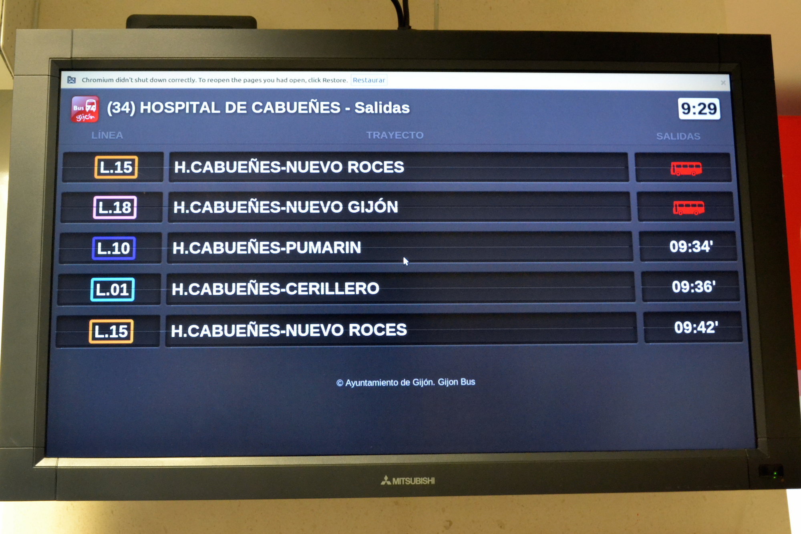
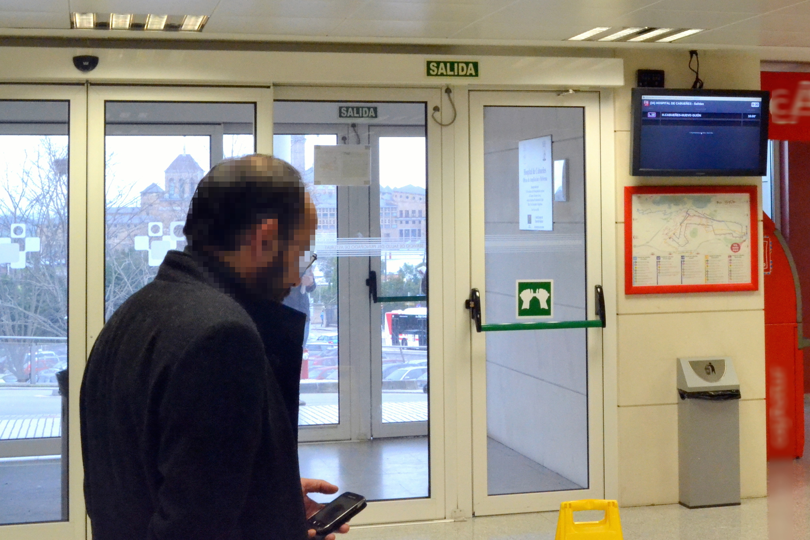
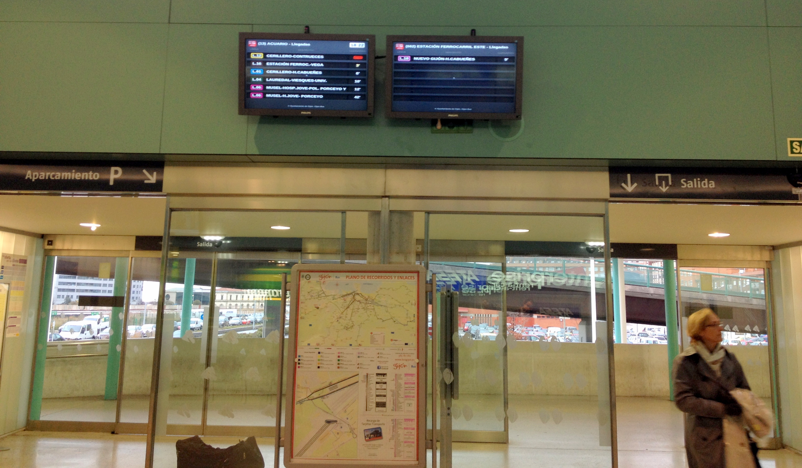

Efficient Reuse of Public Transport Information
in the City of Gijon
City of Gijón
AKA Xixón [ʃiˈʃoŋ]
North of Spain
Gijón
Population: 275,000
Very active in eGovernment
datos.gijon.es launched in 2010
Released a Web Service with Public Transport Information
- timetables,
- lines (routes, status, origin, destination),
- stops (location, arrivals, departures),
- and coaches (status, position, journey)
Reuse Started
by Developers/Citizens

by the Industry

Layar App
by the Industry

Realtime visualizations!
by Artists
Multimedia setup based on geolocation, data visualization, electronic music, interaction, and animation
Xixón Sound. V01 – allegretto para flotilla de autobuses
by Local Businesses

The same open app in a cafe

Showing the status of the bus stop

by the City Council?

Cheaper, huh?

Installed in public facilities

Even recycling old computers

Hospital, railway station, university…

Not only social benefits
| Standard display | PC-based equipment | |
|---|---|---|
| Unit cost | €3,900 | €1,000 |
| 284 units* | €1M | €300,000 |
* Public facilities with feasability to install these systems
Excluding installation costs!!!
Direct savings for the government
Open data without additional cost (Web Service already existed)
Free app made by others (reuse of basic HTML App)
€0.8 million (4% annual budget)
Thanks!
This presentation: http://www.w3c.es/Presentaciones/2014/0630-EfficientPSIReuse_Samos-MA
Paper: http://datos.fundacionctic.org/recursos/2014/05/transport_gijon_sharepsi.pdf